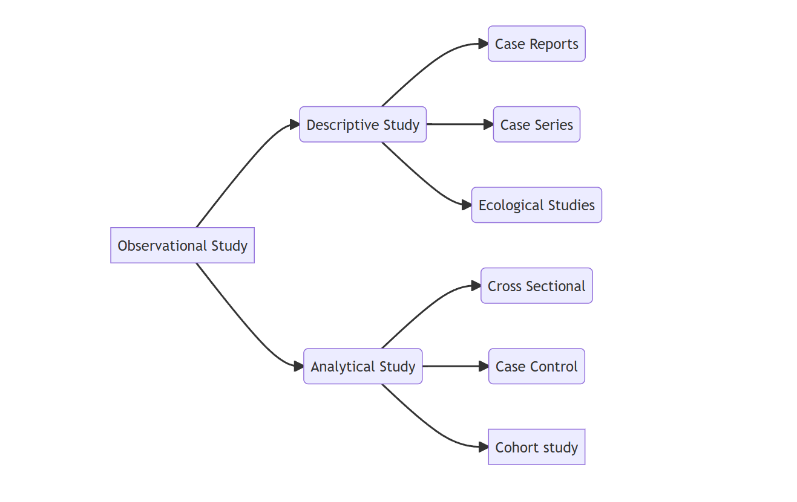
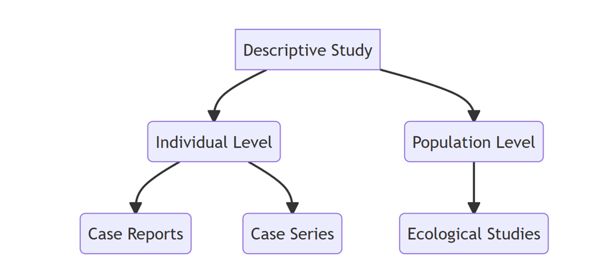
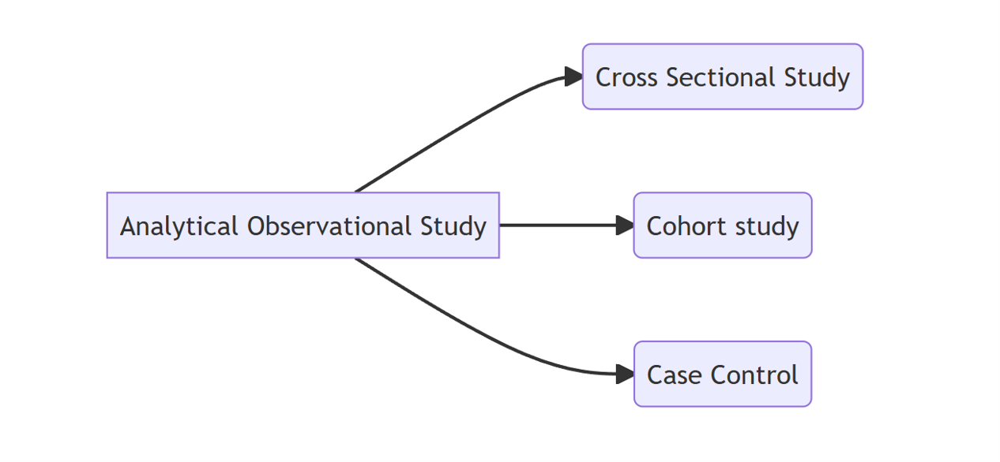
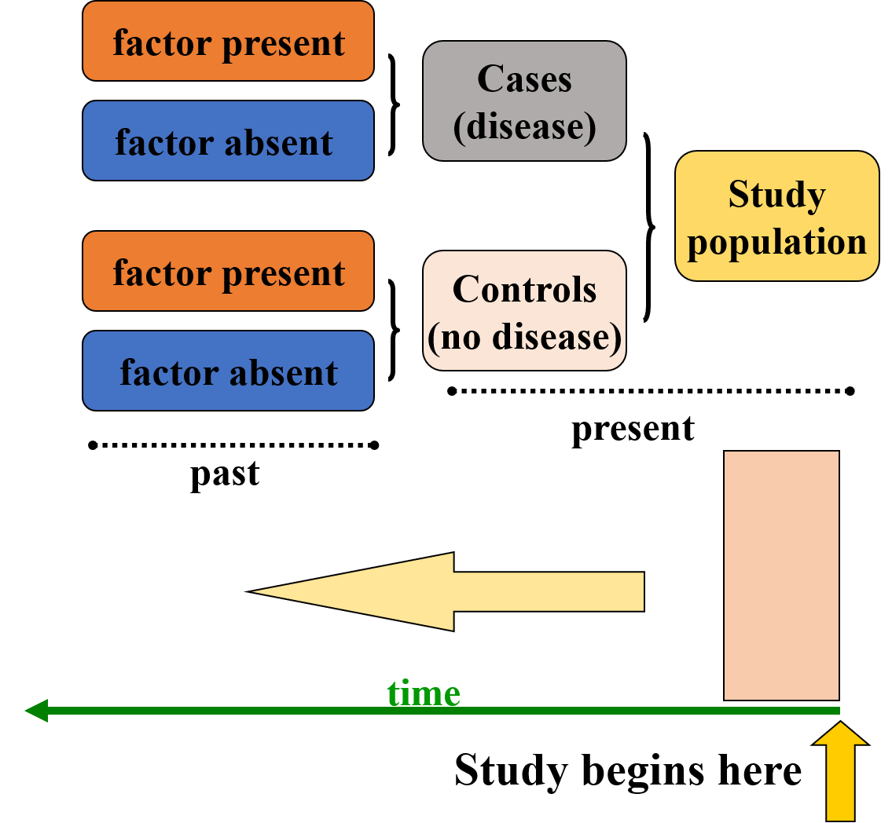
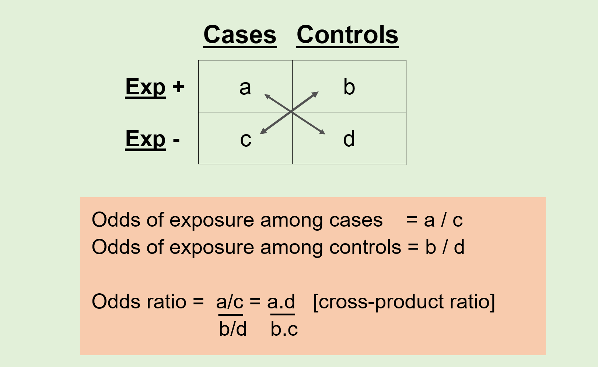
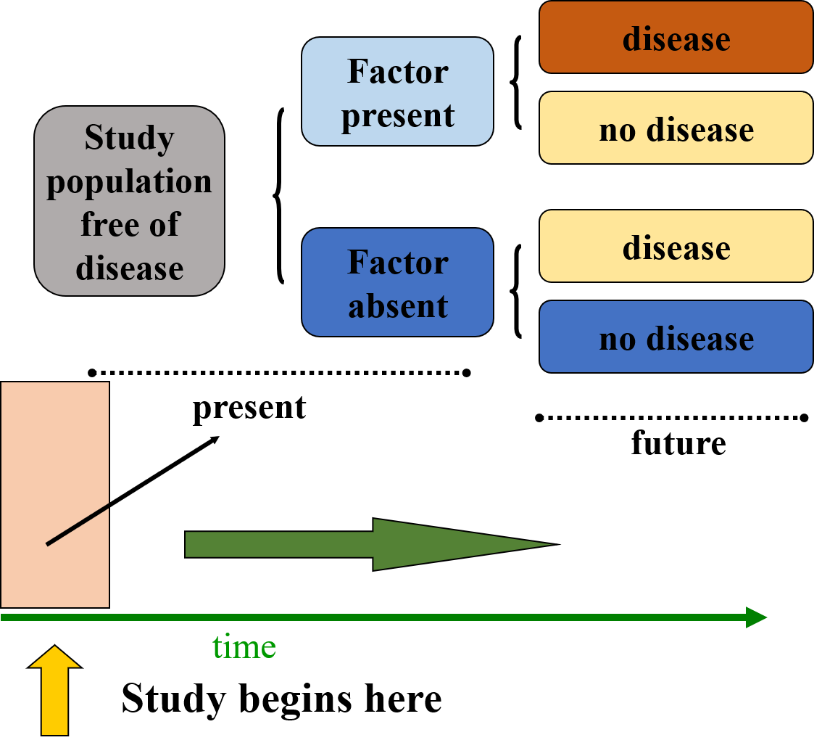
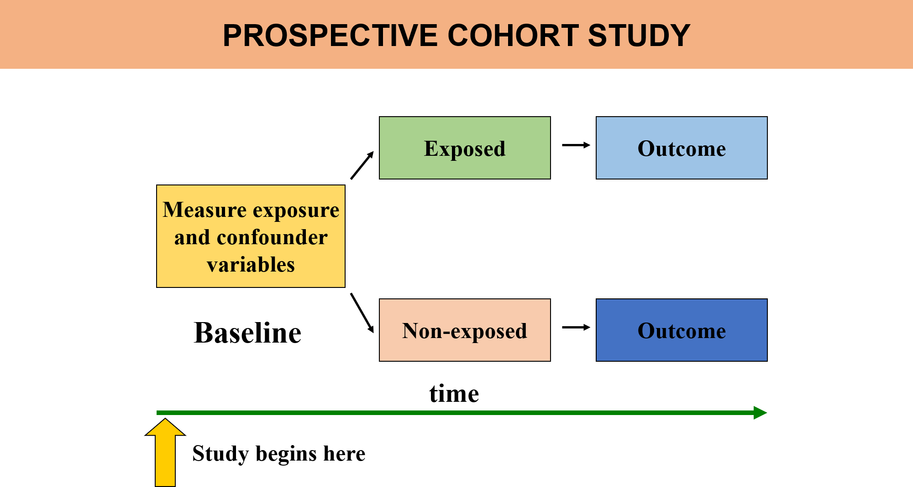
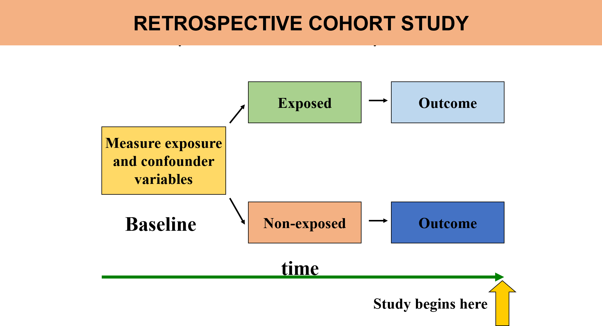
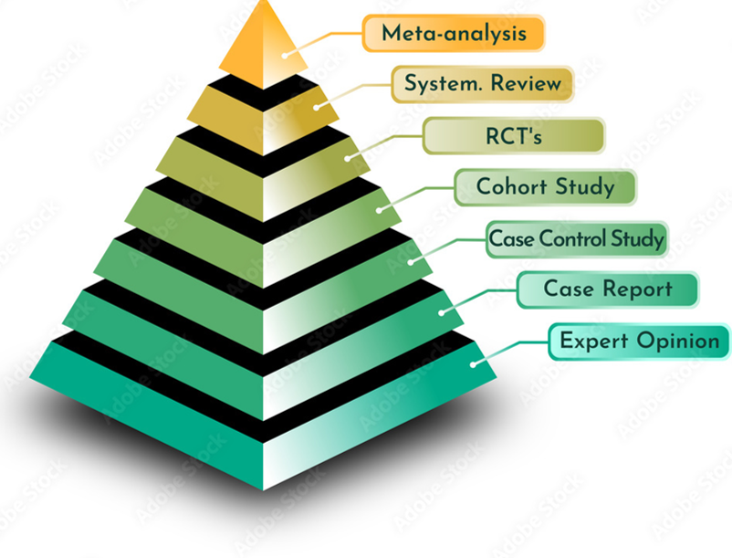

| Characteristics | Observational.Study | Experimental.Study |
|---|---|---|
| Definition | Observes & measures variables without manipulating them | Manipulates the variables to determine their effect on another |
| Control | Limited control over extraneous variables or confounders | Strict control over variables by process of randomisation |
| Generalisable | May not be generalised | May be generalised |
| Feasibility | Less expensive, less time consuming, easy to conduct | Expensive, time consuming, complex conduct |
3 Epidemiological Study Designs
The goal of this session is to introduce different study designs used in epidemiology, understand their strengths and limitations and thereby equip us to choose appropriate designs for various research questions.
3.1 What is a ‘Study Design’ ?
A framework, or a set of methods and procedures used to collect and analyze data on variables specified in a particular research problem.
A strategy, a direction to follow, in order that your objective is achieved or the question you ask is answered.
A specific plan or protocol for conducting the study, which allows the investigator to translate the conceptual hypothesis into an operational one.
3.2 What determine the type of Study Design?
The nature of question
The goal of research
The availability of resources
3.3 Study designs: Broad categorisation
Observational Study Design
Experimental Study Design
The above links will take you to each of the study design and its characteristics, while to have a quick differentiation of the two, here is a table summarising the key points.
3.4 Observational Study Design
An observational study is a type of research design where researchers observe and analyze subjects without manipulating any variables. This approach allows for the examination of real-world conditions and associations between exposures (such as risk factors or interventions) and outcomes (like diseases or behaviors) in a natural setting.
3.4.1 Types of Observational Study Design
Broadly observational study designs are categorised as two:
- Descriptive Study Designs
- Analytical Study Designs
3.4.2 Differentiate Descriptive & Analytical study design
The above links will take you to each of the study design and its characteristics, while to have a quick differentiation of the two, here is a table summarising the key points.
| Descriptive.Study | Analytical.Study |
|---|---|
| Describes phenomena as they exist | Understands phenomena |
| Describes occurrence of outcome | Measures association between exposure & outcome |
| Deals with ‘who’, ‘what’,‘when’, ‘where’ | Deals with ‘why’ and ‘how’ |
| Generates hypothesis | Tests hypothesis |
| No comparison group | Presence of comparison group |
3.4.3 Classification of Desciptive & Analytical Study Design
Each of the above mentioned study designs are further sub-classified as shown in the figure below:

3.4.4 Descriptive Observational Study Design
Descriptive study design is a research methodology that aims to provide a detailed account of a population, phenomenon, or event. Unlike experimental designs, which seek to establish causal relationships through manipulation of variables, descriptive studies focus on painting a comprehensive picture of the characteristics and conditions as they exist in real life.
3.4.4.1 The Primary Goal of Descriptive Studies
To describe the characteristics of a population or phenomenon. This includes gathering information about demographics, behaviors, attitudes, or conditions without influencing or altering them.
3.4.4.2 Limitations of Descriptive Studies
While descriptive studies provide essential insights, they do not establish causal relationships. They are limited by the absence of manipulation of variables, which means that findings must be interpreted with caution.
3.4.4.3 Classification of Descriptive Study Design

First let us delve into the individual level descriptive studies.
Case Reports
A case report is a detailed account of a specific clinical instance involving an individual patient. It serves as one of the earliest forms of medical research, emerging from the careful observations made by physicians and healthcare providers during their clinical practice. It serves as valuable tool for generating hypotheses, particularly in emerging health issues, as they document unique clinical presentations and associations.They provide detailed accounts of individual patient experiences, which can inform clinical practice and enhance understanding of rare or novel conditions.
Simplest study design
Hypothesis generating tool
Detailed presentation of a single case, new or unfamiliar diseases, rare manifestations
Generally report a new or unique finding
previous undescribed disease
unexpected link between diseases
unexpected new therapeutic effect
adverse event
A case report of uterine lipoma is given here. Uterine lipoma: A case report
The emergence of the Zika virus in Latin America marked a significant public health concern, particularly due to its association with serious fetal anomalies, including microcephaly. Case reports played a crucial role in elucidating the relationship between Zika virus infection and adverse pregnancy outcomes, significantly enhancing our understanding of this public health crisis.
A case report that first documented instance of maternal Zika virus infection associated with fetal microcephaly in Colombia, mirroring presentations previously observed in Brazil during the 2015–2016 outbreak is presented here. Case report: microcephaly associated with Zika virus infection, Colombia
Case Series
Experience of a group of patients with a similar diagnosis
Cases may be identified from a single source or from multiple sources
Generally report on new/unique condition
May be only realistic design for rare disorders
Suffers from the absence of a comparison group
Role of Case Series in Understanding Thalidomide and Phocomelia
Case series have played a crucial role in understanding the relationship between thalidomide and phocomelia (a congenital deformity involving shortened limbs). By documenting multiple cases of thalidomide exposure during pregnancy, case series provided valuable insights into the patterns and severity of birth defects caused by the drug, particularly its teratogenic effects. These case series helped establish the timing of exposure, identifying the specific window of vulnerability during fetal development, which was typically in the first trimester. Furthermore, case series allowed clinicians to track the long-term outcomes in children affected by thalidomide, contributing to a deeper understanding of potential delayed effects and the overall impact on health. This real-world data was instrumental in refining regulatory policies and ensuring that thalidomide was tightly controlled, preventing similar tragedies in the future.
An example for a case series is given here. Coronectomy of mandibular wisdom teeth: A case serieshere
Ecological Studies
- An
ecological studyis a type of observational study where the group (such as populations, regions, or countries) rather than the individual, is used as the unit of analysis. It examines patterns or associations between group-level exposures (e.g., environmental factors, policies, cultural practices) and health outcomes (e.g., disease rates) across different populations.
Key Features of an Ecological Study:
Group as the Unit of Analysis: In an ecological study, the analysis is conducted at the population level (such as countries, cities, or communities) rather than at the individual level. This means that the data is aggregated for groups of people, not for each individual in the group.
No Individual-Level Information: Ecological studies typically do not have detailed individual-level data (e.g., personal risk factors, behaviors, or medical histories). Instead, data is usually reported as averages or totals for a whole population or region (e.g., average air pollution levels in a city, or total tobacco consumption in a country).
Exposure and Disease Relationships at the Population Level: The aim is to determine if there is an association between the frequency of a particular exposure (e.g., diet, pollution, smoking) and the rate of disease (e.g., cancer, heart disease) within different populations. The assumption is that populations with high exposure to a certain factor may also experience higher disease rates.
Comparison of Groups, Not Individuals: Unlike cohort or case-control studies, where individuals are compared based on their exposure status, ecological studies compare different groups (e.g., countries, regions, or cities) based on the prevalence of both the exposure and the health outcome of interest. This allows for broader comparisons but limits conclusions about individual causality.
Example: An example of an ecological study might involve comparing lung cancer rates in different countries and examining whether countries with higher levels of air pollution or higher smoking rates have correspondingly higher lung cancer rates. The analysis would be based on aggregate data (e.g., average smoking rates or air pollution levels for the population of each country), not individual-level smoking history or exposure.
Why do Ecological study?
-Low Cost and Convenience:
Ecological studies are typically less expensive compared to studies that require individual-level data collection, such as cohort or case-control studies. This is because they often rely on existing aggregated data (e.g., national health statistics, census data, or public health records), which reduces the need for extensive fieldwork or recruitment efforts.
These studies are convenient when data is already available at the group level, allowing researchers to conduct large-scale comparisons across different populations or regions without the need for costly and time-consuming individual-level data collection.
- Some Measurements Cannot Be Made on Individuals:
In some cases, individual-level data may be difficult or impossible to obtain, particularly when dealing with aggregate measures that are of interest at the population level. For example, it’s challenging to directly measure the average air pollution exposure of every individual in a country, but an ecological study can use average exposure data for entire regions or countries to examine its association with health outcomes. Similarly, ecological studies can be used to investigate population-wide factors like social determinants of health, environmental exposures, or government policies that impact large groups of people.
- Simplicity of Analyses and Presentation:
Ecological studies often involve simpler statistical analyses compared to studies that require individual-level data. Researchers typically use aggregate data, such as means, medians, or proportions, making the analysis more straightforward. Presenting findings in an ecological study is also simpler, as results can be summarized at the population or group level, often in the form of bar graphs, maps, or tables showing the relationships between exposure and outcome variables across different groups.
- Helpful in Generating New Hypotheses:
One of the major strengths of ecological studies is their ability to generate new hypotheses. By comparing different groups, researchers can identify potential relationships or trends that warrant further investigation through more detailed individual-level studies (e.g., cohort or case-control studies). For instance, an ecological study may find that regions with higher dietary fat intake also have higher rates of cardiovascular disease, prompting further individual-level research to understand the underlying mechanisms or risk factors.
Example: Imagine an ecological study comparing regional cancer rates in different countries along with their average levels of alcohol consumption. While individual-level data on alcohol consumption may not be readily available, the study could reveal that countries with higher average alcohol consumption seem to have higher cancer rates. This could lead to the hypothesis that alcohol consumption might be a contributing factor to cancer, which could then be explored further in more detailed studies.
Key Issues with Ecological studies
Explores correlation between aggregate exposure and outcome
Unit of analysis: Group or clusters
Prone to ecological fallacy
Missing data
Cannot adjust to confounding
Ecological Fallacy
Drawing inference at an individual level based on a group level data
Arises when associations between two variables at group level differ from associations between analogous variables measured at the individual level
To have deeper understanding of the concept of ecological fallacy you may visit, the following link: Ecological Fallacy
3.4.5 Analytical Observational Study Design
An analytical observational study design is a type of research method used to investigate relationships between variables and test hypotheses. Unlike descriptive observational studies, which simply describe phenomena as they naturally occur, analytical studies aim to analyze the association or correlation between exposures (or risk factors) and outcomes (or diseases), often to uncover patterns or test causal hypotheses. However, these studies still do not involve manipulation of the study variables, which distinguishes them from experimental designs.
3.4.5.1 Key Features of Analytical Observational Study Design
Aims to analyze relationships between variables, such as how a certain exposure (e.g., smoking, air pollution, or diet) affects the risk of an outcome (e.g., lung cancer, cardiovascular disease, or obesity).
As with all observational study designs, there is no manipulation of the variables by the researcher. The study simply observes the natural occurrence of exposure and outcomes.
Test specific hypotheses about associations between exposures and outcomes. These studies aim to identify whether there is a statistical relationship and how strong that relationship might be.
While causal inference is stronger in experimental designs (like randomized controlled trials), analytical observational studies can suggest causal relationships if the study is well-designed and the findings are consistent with other evidence.
3.4.5.2 Classification of Analytical Observational Study Design

3.4.5.3 Cross Sectional Study Design
A cross-sectional study design involves observing a snapshot of a population at a single point in time, providing a “cross-section” view of both exposures and outcomes simultaneously. In this design, data on the presence or absence of specific outcomes (such as disease or health conditions) and exposures (such as risk factors or behaviors) are collected at the same moment, allowing researchers to examine the relationship between the two. The unit of observation and analysis in a cross-sectional study is typically the individual, with researchers collecting information from each participant to assess disease burden and prevalence. Cross-sectional studies are often used to measure prevalence, as they provide a clear picture of how common a particular outcome or exposure is within a population at that specific point in time. These studies can also assess the presence of one or more outcomes and exposures, enabling researchers to explore associations and identify patterns or trends. However, because the data is collected at a single point, cross-sectional studies cannot establish causal relationships, but they are valuable for generating hypotheses and understanding the current state of health or disease in a population.
3.4.5.3.1 Uses of Cross Sectional Study Design
Cross-sectional studies are widely used in public health and epidemiology for various purposes due to their ability to provide a snapshot of a population at a single point in time. Some of the key uses of cross-sectional studies include:
Estimating Prevalence of Disease or Risk Factors: Cross-sectional studies are ideal for determining the prevalence of diseases or health conditions, as they allow researchers to measure the proportion of individuals affected by a particular disease or exposed to a risk factor within a defined population at a specific point in time.
Distribution of Health Problems by Time, Place, and Person: These studies help in understanding how health problems vary across different populations based on characteristics such as age, gender, geographical location, or socioeconomic status. By examining the distribution, researchers can identify groups at higher risk or areas of concern.
Planning Health Care Services Delivery: Cross-sectional data is valuable for health planners and policymakers to assess the current burden of disease and identify areas where health services are needed most. This information can guide the allocation of resources and the development of targeted health interventions.
Setting Priorities for Disease Control: By understanding the prevalence of various diseases or risk factors, cross-sectional studies help prioritize public health efforts and control measures. For example, if a certain disease is found to be widespread, it may prompt immediate action or intervention to mitigate its spread.
Generating Hypotheses: While cross-sectional studies cannot establish causality, they are useful for generating hypotheses about possible associations between exposures and outcomes. These hypotheses can then be tested in more rigorous experimental or longitudinal studies.
Examining Evolving Trends: Cross-sectional studies, especially when repeated over time, can reveal evolving trends in health patterns, disease prevalence, or risk factors within a population. This can help track changes and shifts in public health concerns.
Before/After Surveys: Cross-sectional studies can also be used to assess the impact of interventions or changes in policy by comparing the health status of a population before and after an event or intervention, even if they are not longitudinal in nature.
Iterative Cross-Sectional Studies: Conducting cross-sectional studies in a series or on a rotating basis allows researchers to capture temporal changes and track shifts in population health, risk factors, or disease burden over time without the need for a continuous follow-up.
In summary, cross-sectional studies are versatile tools for understanding the health landscape at a particular moment, guiding public health decisions, and providing insights into the relationships between exposures and outcomes. However, they are primarily observational and cannot infer causal relationships between variables.
3.4.5.4 Case Control Study Design
An observational study design commonly used to identify risk factors for a disease or outcome. This design is particularly effective for investigating rare diseases or outcomes because it starts by identifying individuals who have the disease (cases) and comparing them to individuals who do not have the disease (controls). The key focus is to assess the prior exposure history of both groups to determine if specific risk factors are more common in the cases than in the controls.
3.4.5.4.1 Key Steps in Case-Control Study:
- Identifying Cases and Controls:
Cases,individuals who have the disease or outcome of interest. Controls,individuals who do not have the disease but are otherwise similar to cases in terms of demographic characteristics (age, gender, etc.) and other relevant factors, except for the presence of the disease.
- Comparing Prior Exposure History:
The main objective is to compare the frequency of exposure to a specific risk factor among the cases and controls. For example, researchers might look at whether individuals who have lung cancer (cases) were more likely to have smoked (exposure) than individuals who do not have lung cancer (controls). Data is typically collected retrospectively, often through interviews or medical records, to determine the exposure history prior to the development of the disease.

Assessing the Effect of Exposure: The study examines how often the exposure is present among the cases and controls. If the exposure is significantly more frequent among the cases compared to the controls, it may suggest a potential association between the exposure and the disease. For example, if smoking is much more common among those with lung cancer (cases) than among those without it (controls), smoking could be identified as a potential risk factor for lung cancer.
Effect vs. Cause: In a case-control study, it is important to differentiate between association and causation. While the study may reveal that a particular exposure (e.g., smoking) is more common among those with the disease, it does not prove that the exposure causes the disease. The observed effect (association) could be influenced by other confounding factors, such as genetic predisposition, environmental factors, or biases in recall (e.g., patients with the disease may be more likely to remember or report past exposures). Establishing causality requires more rigorous evidence from other study designs, such as cohort studies or randomized controlled trials.
Comparison of Exposure Frequency: The core analysis in a case-control study involves comparing the frequency of exposure in the two groups: Cases (those with the disease) vs. Controls (those without the disease).
If a higher percentage of cases were exposed to a certain risk factor than controls, this may indicate a potential association between the exposure and the outcome.
The odds ratio (OR) is a common statistical measure used to quantify this association in case-control studies, indicating how much more likely cases are to have been exposed compared to controls.

3.4.5.4.2 Advantages & Limitations of Case Control Study
Advantages of Case Control Study:
Easy to conduct: Case-control studies are relatively simple to design and implement, especially compared to other study types like cohort studies or randomized controlled trials.Less expensive: These studies tend to be less costly because they require fewer resources, particularly in terms of time and follow-up.Less time-consuming: Case-control studies typically focus on retrospective data, meaning they can be completed more quickly than studies that require long-term follow-up.Suitable for rare diseases: This design is ideal for studying rare diseases because it focuses on individuals who already have the disease (cases), rather than needing to follow large groups over time.Multiple exposures: A case-control study can assess multiple potential risk factors or exposures that might contribute to the disease, making it versatile.
Limitations of Case Control Study:
Selection bias: There is a risk of selecting cases or controls in a way that does not represent the general population, which can skew the results.
-Inefficient if exposure is rare: If the exposure being studied is very rare, it may be difficult to find enough exposed cases or controls, making the study less efficient.
Recall bias: In retrospective studies, participants may not accurately remember or report past exposures, leading to errors in the data (e.g., cases might recall exposures more readily than controls).
An example for a case control study is given here.Effectiveness of seasonal malaria chemoprevention (SMC) treatments when SMC is implemented at scale: Case–control studies in 5 countries
3.4.5.5 Cohort Study Design
A cohort refers to a group of people who share some common characteristics or experiences, often studied over time to observe how those factors affect outcomes, such as health or behavior. Here’s a breakdown of the meaning and types of cohorts:
Definition: A cohort is a group of individuals who are grouped together based on a shared characteristic, experience, or exposure, and who are followed over a period of time to study specific outcomes.
Common Characteristics: People in a cohort typically share one or more common factors, such as age, geographic location, occupation, or exposure to a certain condition.
A cohort study is an observational study design used to compare individuals who have a specific risk factor or exposure with those who do not. The main goal is to examine the difference in the incidence (or risk) of a particular disease or outcome over time between these two groups.
3.4.5.5.1 Key Features of a Cohort Study:
Observational Design:
In a cohort study, the researcher observes the participants without intervening or manipulating their exposure. This makes it different from experimental studies, such as randomized controlled trials (RCTs).
Comparison of Exposed vs. Unexposed Groups:
The study typically follows two groups of people: one group with the risk factor or exposure of interest (e.g., smokers) and another group without the risk factor or exposure (e.g., non-smokers). Researchers then compare the rates of a particular outcome (e.g., lung cancer) in both groups.
Incidence of Disease Over Time:
The focus of the study is to observe the incidence or risk of a disease or health outcome in the exposed group compared to the unexposed group over a period of time. This allows researchers to infer whether the exposure is associated with an increased or decreased risk of the outcome.

Prospective Data Collection:
Prospective cohort studies are the most common type, where participants are followed over time starting from the point of exposure, and data on outcomes (disease development, for example) are collected going forward. This helps establish a clear temporal relationship between the exposure and the disease.

Retrospective cohort studies can also be conducted, where researchers look back at existing data to compare individuals based on their past exposures and outcomes. However, this is less common than prospective studies because it may be harder to control for confounding variables.

Best Observational Design:
Cohort studies are often considered the “best” observational study design for studying the cause-and-effect relationship between exposures and outcomes, as they allow for the observation of how exposures affect disease incidence over time. They also tend to provide stronger evidence compared to cross-sectional or case-control studies.
Example: A cohort study could examine a group of people who smoke (exposed group) and a group of non-smokers (unexposed group). Over the course of several years, the study would track the incidence of lung cancer in both groups to determine whether smoking is associated with a higher risk of developing the disease. In summary, cohort studies are valuable tools in epidemiology for understanding the relationship between risk factors and disease outcomes by following individuals over time and comparing those with and without certain exposures.
To read more about Observational Study Design, please follow the linkObservational research methods. Research design II: cohort, cross sectional, and case-control studies
3.4.6 Alternative Observational Designs: Case-Cohort, Case-Crossover, and Nested Case-Control
3.4.6.1 Case-Cohort Study
A type of cohort study where the cases (individuals who develop the outcome of interest) are compared to a sub-cohort (a representative sample of the larger cohort), rather than to the entire cohort. The sub-cohort is selected at the start of the study and includes both cases and non-cases, but only the non-cases are randomly selected.
3.4.6.2 Case-Crossover Study
A study design used primarily for studying the triggers of acute events or conditions, such as heart attacks, strokes, or asthma attacks. In this design, individuals act as their own control. The exposure of interest is compared during the period immediately preceding the event (the “case period”) with exposure during other time periods (the “control period”).
3.4.6.3 Nested Case-Control Study (or Nested Case-Cohort Study)
A nested case-control study (often referred to as a nested case-cohort study in some contexts) is a type of case-control study that is embedded within an existing cohort study. In this design, cases of the disease or outcome are identified from the larger cohort, and controls are selected from individuals who are still disease-free at the time the cases develop. The controls are matched on certain characteristics (e.g., age, sex), but they are randomly selected from the cohort at the time the case occurs.
| Study.Design | Key.Feature | Main.Use.Case | Strengths | Limitations |
|---|---|---|---|---|
| Case Cohort | Random sample from a cohort | Comparing cases to a random sub-cohort | Efficient, reduces recall bias | Potential selection bias, sub-cohort size |
| Case Cross Over | Individual as their own control | Studying acute events/triggers | Controls for individual confounders | Recall bias, control period selection |
| Nested Case Control | Case-control within a cohort | Studying disease-exposure associations | Efficient, reduces recall bias | Selection bias, potential confounding |
3.5 Experimental Study Design
An experimental study design is a research approach used to investigate causal relationships between variables. In this design, the researcher manipulates one or more independent variables to observe the effect on a dependent variable, while controlling for other factors.
3.5.1 Key Concepts in Experimental Design
Manipulation of One or More Independent Variables
In an experimental study, the researcher manipulates one or more independent variables (IVs) to observe their effect on the dependent variable (DV). The independent variable is the factor that the researcher intentionally changes or varies, while the dependent variable is the outcome or effect that is measured. By manipulating the IVs, the researcher can examine how different levels or conditions of the independent variable influence the dependent variable.
Example: In a clinical trial testing a new drug, the independent variable could be the dosage level of the drug (e.g., low, medium, or high doses), and the dependent variable could be the improvement in health (e.g., reduction in symptoms or recovery rate).
Random Assignment to Treatment Levels
Random assignment refers to the process by which participants are randomly assigned to different experimental conditions or treatment levels. This process ensures that each participant has an equal chance of being assigned to any treatment group, which helps to reduce bias and ensures that the groups are comparable at the start of the study.
Why is Random Assignment Important?
It minimizes selection bias by ensuring that any differences between groups (e.g., in terms of demographics, characteristics, or prior experience) are likely to be distributed randomly, rather than being systematically different.
It enhances the internal validity of the study by making sure that any observed effects are due to the manipulation of the independent variable rather than pre-existing differences between groups.
Example: In a study testing a new teaching method, participants might be randomly assigned to either the experimental group (which uses the new teaching method) or the control group (which uses traditional methods). Randomization ensures that each participant has an equal chance of being in either group, helping to ensure that the results are not influenced by other factors like prior knowledge or motivation.
Observation of Results on Dependent Variables
Once participants are assigned to different treatment groups, the researcher observes and measures the effects of the independent variable on the dependent variable(s). The dependent variable is what the researcher is trying to explain or predict, and it is expected to change in response to the manipulation of the independent variable.
Example: In a study testing the effect of sleep on cognitive performance, the dependent variable might be the participants’ performance on a cognitive task, such as memory recall or problem-solving ability. The researcher would observe how different levels of sleep (e.g., 4 hours, 6 hours, 8 hours) impact performance on this task.
Internal Validity and Causality
One of the major strengths of experimental designs is their ability to establish internal validity, meaning the study can provide evidence for a causal relationship between the independent and dependent variables. Internal validity refers to the extent to which the results of the experiment can be confidently attributed to the manipulation of the independent variable, rather than to other external factors or confounding variables.
Causality is established because:
The researcher manipulates the independent variable. Participants are randomly assigned to different treatment conditions.
Any differences observed in the dependent variable can be directly linked to the manipulation of the independent variable.
Example: If a researcher finds that students who sleep for 8 hours perform better on a cognitive test than those who sleep for only 4 hours, and random assignment ensures that both groups are similar in other respects, this allows the researcher to make a causal claim: “Increased sleep causes better cognitive performance.”
Controlling for Extraneous Variables
In experimental research, it is essential to control for extraneous variables, or variables that could influence the dependent variable but are not of primary interest in the study. If these extraneous variables are not controlled, they can introduce spurious effects—i.e., false or misleading relationships between the independent and dependent variables. By controlling for extraneous variables, researchers can ensure that observed effects are truly due to the manipulation of the independent variable.
How to Control for Extraneous Variables:
Randomization: Randomly assigning participants to different treatment groups helps ensure that extraneous variables are equally distributed across groups, minimizing their potential impact.Matching: In some cases, participants may be matched on certain characteristics (e.g., age, gender, pre-test scores) to ensure that these factors are controlled for.Holding Variables Constant: Researchers may deliberately control certain variables by ensuring that they remain constant across all groups (e.g., keeping room temperature, time of day, or task duration the same for all participants).Statistical Control: Statistical techniques, such as analysis of covariance (ANCOVA), can be used to adjust for the effects of extraneous variables after data collection.
Example: In a study examining the effect of a new exercise program on weight loss, extraneous variables like diet, baseline activity level, and sleep patterns could affect weight loss outcomes. The researcher could control for these variables by either matching participants on key characteristics (e.g., body mass index, age) or by ensuring that all participants follow the same diet and sleep schedule throughout the experiment.
3.5.2 Types of Experimental Study Design
3.5.2.1 Randomized Trial vs. Non-Randomized Trial
Randomized Trial
In a randomized trial, participants are randomly assigned to different treatment groups (such as a treatment or a control group). This random assignment helps ensure that any differences between groups are not due to pre-existing biases or characteristics, making the groups comparable.
Strengths:
- Minimizes selection bias and confounding variables
- Increases the internal validity of the results.
- Randomized trials are the gold standard for establishing causality.
Non-Randomized Trial
In a non-randomized trial, participants are not randomly assigned to treatment groups. Instead, they are assigned based on pre-existing conditions, personal choice, or other non-random methods. These trials are often used when randomization is not feasible or ethical.
Strengths: - Easier and cheaper to conduct, especially in settings where randomization is not possible (e.g., when studying rare diseases or certain public health interventions).
Limitations:
- Greater risk of bias due to the absence of randomization, which can affect the internal validity of the study.
3.5.2.2 Parallel Trial vs. Cross-Over Trial
Parallel Trial
In a parallel trial, participants are assigned to different groups, with each group receiving a different treatment or condition simultaneously. Each group is studied independently, and the comparison is made between groups.
Key feature:
Different groups receive different treatments at the same time.
Strengths:
- Simple design and easy to execute.
- There is no risk of treatment carryover because participants receive only one treatment.
Limitations:
- Requires more participants, as each participant is only exposed to one condition.
- Potential confounding factors must be controlled for.
Cross-Over Trial
In a cross-over trial, participants receive both the experimental treatment and the control treatment at different times, with a washout period in between to eliminate any lingering effects of the first treatment. Each participant serves as their own control.
Key feature:
Participants switch between treatments after a washout period.
Strengths:
- Requires fewer participants compared to parallel trials because each participant receives both treatments.
- Good for studying short-term effects of treatments.
Limitations:
-May be affected by carryover effects, where the effects of the first treatment influence the response to the second treatment.
3.5.2.3 Individual Trial vs. Community Trial
Individual Trial
An individual trial involves randomizing and assigning interventions to individual participants. Each participant’s response to the intervention is measured, and outcomes are assessed on an individual basis.
Strengths:
Provides more detailed and individualized data, and the random assignment ensures internal validity.
Limitations:
Does not account for group-level effects or behaviors that might influence outcomes in real-world settings.
Example: A clinical trial testing a new vaccine where each individual receives the vaccine or a placebo, and their health outcomes are tracked individually.
Community Trial
A community trial (also known as a group-randomized trial) involves randomizing groups or communities, rather than individuals, to different intervention conditions. This design is often used in public health research where interventions are targeted at entire communities or populations.
Strengths:
Useful for evaluating interventions that affect populations, such as health campaigns or environmental interventions. Allows researchers to study broader social and community-based effects.
Limitations:
More complex to analyze due to the clustering of participants within groups, and greater variability may exist between communities.
Example: A public health intervention testing the effect of a smoking cessation program in different schools or neighborhoods, where each community is randomly assigned to receive the intervention or not.
3.5.2.4 Superiority Trial vs. Inferiority Trial vs. Equivalence Trial
Superiority Trial
A superiority trial is designed to determine whether one treatment is superior to another. The goal is to show that the experimental treatment is more effective than the control (e.g., placebo or standard treatment).
Inferiority Trial
An inferiority trial seeks to show that a new treatment is not worse than the standard treatment by more than a pre-defined margin. This type of trial is used when the new treatment is expected to be less effective, but still acceptable, often due to factors like cost or side effects.
Equivalence Trial
An equivalence trial aims to demonstrate that two treatments have equivalent effects, meaning their outcomes are within a specified margin of each other. This is often used when there’s a need to prove that a new treatment is as effective as an existing one, but not necessarily better.
3.5.2.5 Explanatory Trial vs. Pragmatic Trial
Explanatory Trial
An explanatory trial is designed to assess the efficacy of an intervention in a controlled, ideal setting. These trials are focused on determining whether an intervention works under optimal conditions, often with highly selected participants who meet strict inclusion criteria.
Pragmatic Trial
A pragmatic trial is designed to evaluate the effectiveness of an intervention in real-world settings. It includes a broader, more diverse group of participants and allows for more flexibility in how the intervention is implemented.
Choosing the appropriate trial design depends on:
- The research question,
- The intervention being tested
- The goals of the study.
3.6 Systematic Literature Review (SLR)
A systematic literature review (SLR) is a structured and methodical approach to identifying, selecting, evaluating, and synthesizing research evidence on a particular topic or research question. The goal is to gather all relevant studies, critically appraise them for quality, and summarize the findings in a transparent, reproducible, and unbiased manner.
Key characteristics of a systematic literature review include:
Clear Research Question: The review starts with a well-defined question or hypothesis that guides the search and selection of studies. It focuses on answering specific research inquiries, often about interventions, exposures, or outcomes.
Comprehensive Search Strategy: A systematic and exhaustive search is conducted across multiple databases (e.g., PubMed, Cochrane, Scopus) and includes both peer-reviewed literature and grey literature (e.g., theses, conference proceedings, government reports). This broad approach helps minimize selection bias and ensures a complete evidence base.
Inclusion and Exclusion Criteria: Clearly defined criteria are established for selecting studies based on relevance, quality, and study design. This ensures consistency in the studies included in the review.
Critical Appraisal of Studies: The studies are systematically assessed for methodological quality and risk of bias. Tools or checklists (such as the Cochrane Risk of Bias tool) are often used to evaluate the reliability and validity of individual studies.
Data Synthesis: The findings from the included studies are summarized and integrated. In qualitative SLRs, this may involve thematic synthesis, while in quantitative reviews, it may involve statistical methods (e.g., meta-analysis).
Transparency and Replicability: All steps, from search strategy to study selection and data synthesis, are fully documented, making the review process transparent and reproducible by other researchers.
Conclusion and Recommendations: Based on the synthesized evidence, the review provides a clear summary of findings, discusses the quality of the evidence, and may offer recommendations for practice, policy, or future research.
Pittway (2008) identifies seven key principles behind systematic literature reviews, which guide the process and enhance the quality of the review:
Transparency: All steps, methods, and decisions in the review process are clearly documented and explained to ensure full disclosure and avoid bias.
Clarity: The review’s goals, scope, and findings are presented in a clear and straightforward manner, making the results understandable and actionable.
Integration: The review synthesizes the findings from various studies, integrating their results to provide a comprehensive understanding of the topic.
Focus: The review is tightly focused on a specific research question, ensuring that the studies included are directly relevant to the question being addressed.
Equality: All relevant studies are given equal consideration, regardless of the source or publication status, to reduce selection bias.
Accessibility: The results of the review are made available to other researchers and the broader community, facilitating the sharing of knowledge and supporting future research.
Coverage: The review includes a broad range of studies, ensuring that it captures all relevant evidence and provides a complete overview of the research topic.
3.7 Meta-Analysis
A meta-analysis is a statistical technique that is often included within a systematic review to quantitatively synthesize the results of multiple studies. The goal of meta-analysis is to combine the effect sizes or outcomes from individual studies to provide a more precise estimate of the overall effect, enhancing statistical power and generalizability.
Key characteristics of meta-analysis include:
Quantitative Synthesis: Meta-analysis involves the statistical pooling of data from multiple independent studies that address the same research question. The effect sizes (e.g., odds ratios, mean differences, risk ratios) from individual studies are combined to produce a weighted average estimate of the effect.
Consistency in Outcome Measures: Studies included in a meta-analysis typically need to measure the same outcomes in a similar way. This allows for the combining of results in a meaningful way. If different outcome measures are used, statistical techniques can be employed to standardize or transform data for comparability.
Statistical Techniques: Meta-analysis uses various statistical models (e.g., fixed-effect or random-effects models) to account for variations between studies, such as differences in study populations, interventions, or methodologies. Random-effects models are typically preferred when there is expected heterogeneity between studies.
Heterogeneity Assessment: One of the key aspects of a meta-analysis is evaluating heterogeneity, or the variation in results across studies. This is done using statistical tests like I², which measures the percentage of variation in effect estimates due to heterogeneity rather than chance.
Publication Bias: Meta-analyses often include assessments of publication bias (e.g., funnel plots or Egger’s test), which occurs when studies with positive or significant results are more likely to be published than studies with negative or non-significant findings. Addressing publication bias is important for ensuring the validity of the meta-analysis.
Summary Effect: The final output of a meta-analysis is typically a single, pooled effect estimate that represents the best available estimate of the true effect of the intervention or exposure across all studies. Confidence intervals are also provided to indicate the precision of the estimate.
A rigorous, structured process for identifying, selecting, and critically appraising research to answer a clearly formulated question. It follows a predefined protocol, ensuring comprehensive and transparent methods for searching, selecting, and synthesizing relevant literature. The process is designed to be replicable, allowing other researchers to reproduce the review and verify findings.
3.8 Evidence Pyramid
The Evidence Pyramid is a hierarchical representation of the quality and strength of different types of research evidence. The pyramid visually organizes evidence according to the type of study and the level of reliability of the findings, with higher levels representing higher-quality, more reliable evidence. The structure reflects the increasing rigor of study designs as you move up the pyramid.
Structure of the Evidence Pyramid (from bottom to top):
Expert Opinion & Anecdotal Evidence:
At the base of the pyramid, expert opinion and anecdotal evidence are considered the least reliable sources of evidence. These are often based on personal experience, professional judgment, or unstructured observations, and while they can offer insights, they do not provide strong, generalizable evidence.
Case Reports and Case Series:
These are detailed descriptions of a single case (case report) or a series of cases (case series) of a particular condition or outcome. While helpful for identifying rare diseases or unusual treatment effects, case reports and case series are generally seen as less reliable because they lack control groups and are prone to bias.
Cross-Sectional Studies:
These studies observe a population at a single point in time and examine the relationships between variables. They can provide useful data on prevalence and associations, but they cannot establish causality due to their observational nature.
Case-Control Studies:
Case-control studies compare individuals with a particular condition (cases) to those without (controls) to identify possible risk factors or exposures. While they are useful for studying rare diseases, they can be prone to recall bias and confounding factors.
Cohort Studies:
Cohort studies follow a group of individuals over time to observe the development of outcomes. These studies are often prospective, meaning they collect data going forward, and they can provide stronger evidence for causal relationships than case-control studies. They can also identify multiple outcomes associated with a single exposure.
Randomized Controlled Trials (RCTs):
RCTs are considered one of the highest levels of evidence in clinical research. Participants are randomly assigned to intervention or control groups, helping to eliminate bias and confounding variables. RCTs can provide strong evidence for the effectiveness of an intervention and its causal effects on outcomes.
Systematic Reviews and Meta-Analyses:
At the top of the pyramid are systematic reviews and meta-analyses, which synthesize and analyze the results of multiple studies. Systematic reviews rigorously assess and summarize the evidence from studies on a particular question, while meta-analyses statistically combine the results of individual studies to provide a more precise estimate of the effect. These are considered the highest level of evidence due to their comprehensive, unbiased synthesis of existing data.

Key Features of the Evidence Pyramid:
Higher levels represent stronger evidence: As you move up the pyramid, studies typically become more rigorous, with greater control of confounding factors and bias, leading to more reliable conclusions.
Lower levels are easier and quicker to conduct but are more prone to bias: Studies lower on the pyramid, such as case reports or cross-sectional studies, are often quicker and less expensive to conduct but have limitations in terms of internal validity and generalizability.